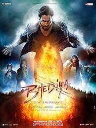
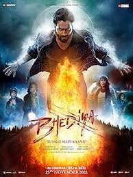

.jpeg)
.jpeg) 

more information about movies
The moving images of a film are created by photographing actual scenes with a motion-picture camera, by photographing drawings or miniature models using traditional animation techniques, by means of CGI and computer animation, or by a combination of some or all of these techniques, and other visual effects. Before the introduction of digital production, a series of still images were recorded on a strip of chemically sensitized celluloid (photographic film stock), usually at a rate of 24 frames per second. The images are transmitted through a movie projector at the same rate as they were recorded, with a Geneva drive ensuring that each frame remains still during its short projection time. A rotating shutter causes stroboscopic intervals of darkness, but the viewer does not notice the interruptions due to flicker fusion. The apparent motion on the screen is the result of the fact that the visual sense cannot discern the individual images at high speeds, so the impressions of the images blend with the dark intervals and are thus linked together to produce the illusion of one moving image. An analogous optical soundtrack (a graphic recording of the spoken words, music and other sounds) runs along a portion of the film exclusively reserved for it, and was not projected. Contemporary films are usually fully digital through the entire process of production, distribution, and exhibition.
Etymology and alternative terms
The name "film" originally referred to the thin layer of photochemical emulsion on the celluloid strip that used to be the actual medium for recording and displaying motion pictures. Many other terms exist for an individual motion-picture, including "picture", "picture show", "moving picture", "photoplay", and "flick". The most common term in the United States is "movie", while in Europe, "film" is preferred. Archaic terms include "animated pictures" and "animated photography". "Flick" is, in general a slang term, first recorded in 1926. It originates in the verb flicker, owing to the flickering appearance of early films. Common terms for the field, in general, include "the big screen", "the silver screen", "the movies", and "cinema"; the last of these is commonly used, as an overarching term, in scholarly texts and critical essays. In the early years, the word "sheet" was sometimes used instead of "screen".
.jpeg)
.jpeg)
.jpeg)